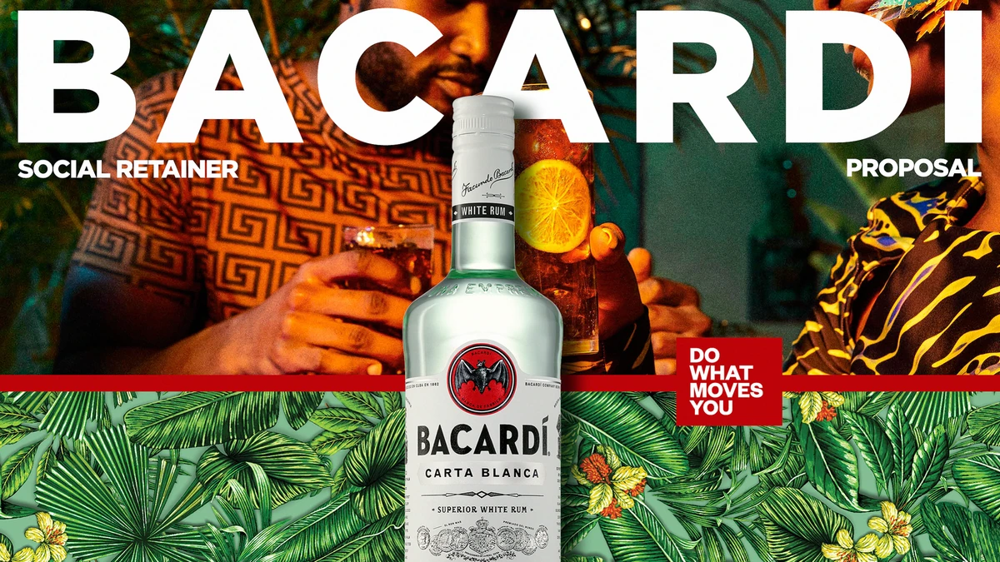
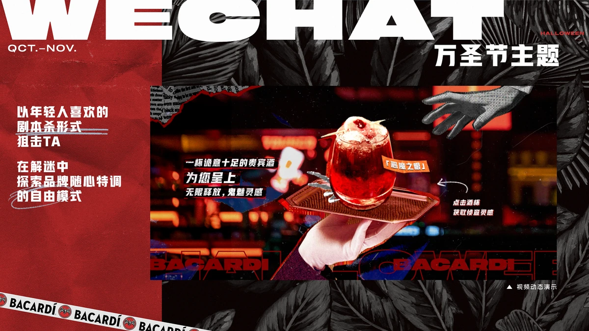
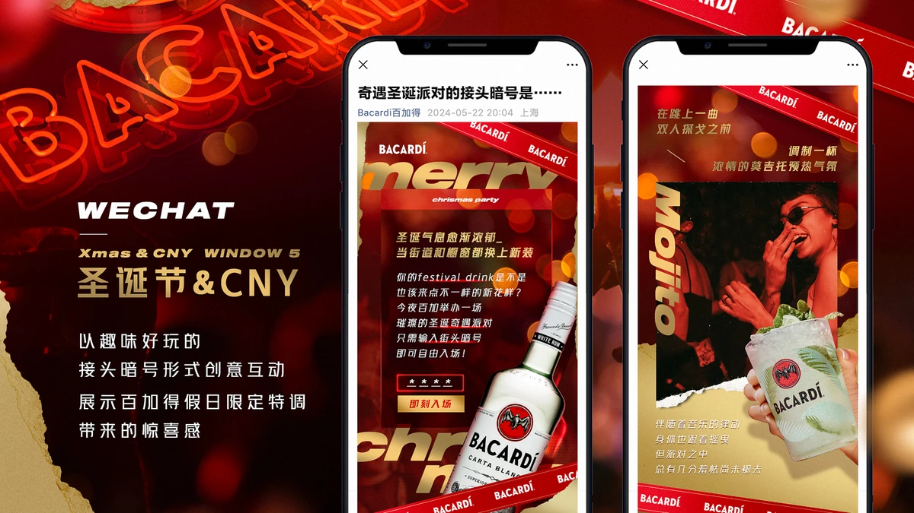
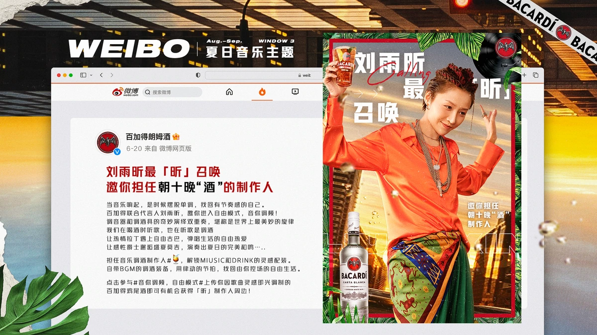
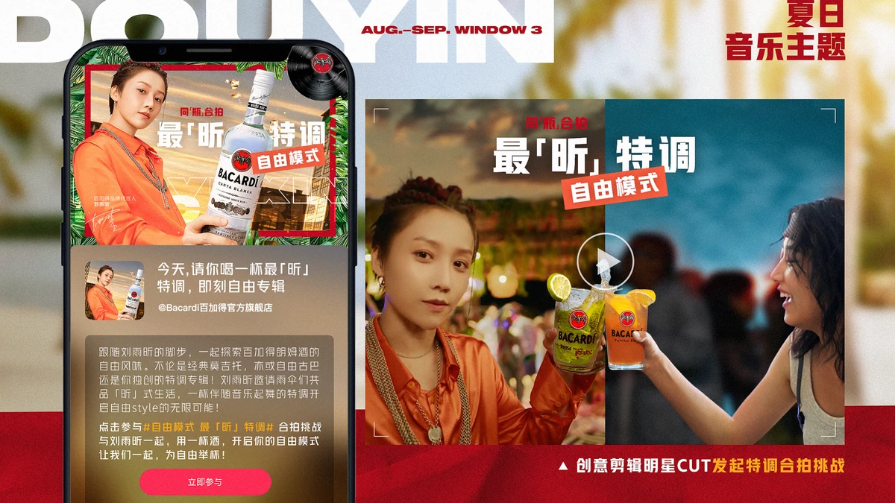
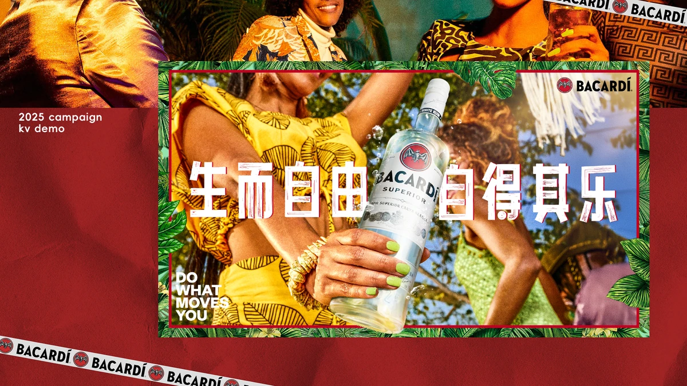

百加得 2024-2025 年度 Social Retainer Campaign

- Brand
- 百加得 BACARDÍ
- Project
- 百加得 2024-2025 年度 Social Retainer Campaign
- Role
- Social 平台内容 Demo 制作、整体方案内容制作
- Status
- PROPOSAL
项目概览
项目背景
百加得需要减少对明星单向发布的依赖，并为不同社媒平台建立更鲜明的沟通方式。方案以“百搭加法”为内容母题，围绕音乐季、万圣节和双旦设计节点玩法。
主要交付物
微信、微博、小红书、抖音内容 Demo；明星粉丝互动；音乐季、万圣节与双旦三大节点创意。




